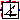

ObsoleteModelica4.Electrical.PowerConverters.DCDC.Control.VoltageToDutyCycle
ObsoleteModelica4.Electrical.PowerConverters.DCDC.Control.VoltageToDutyCycleControl components for DC to DC converters
Extends from Modelica.Icons.Package (Icon for standard packages).
| Name | Description |
|---|---|
|  VoltageToDutyCycle | Obsolete block - use Modelica.Electrical.PowerConverters.DCDC.Control.Voltage2DutyCycle instead |
ObsoleteModelica4.Electrical.PowerConverters.DCDC.Control.VoltageToDutyCycleObsolete block - use Modelica.Electrical.PowerConverters.DCDC.Control.Voltage2DutyCycle instead
This model linearly transforms the input voltage signal into a duty cycle. For the unipolar case the input voltage range is between zero and vMax. In case of bipolar input the input voltage is in the range between -vMax and vMax.
Note: This block is replaced by the improved Voltage2DutyCycle block.
Extends from Modelica.Icons.ObsoleteModel (Icon for classes that are obsolete and will be removed in later versions).
| Name | Description |
|---|---|
| useBipolarVoltage | Enables bipolar input voltage range |
| useConstantMaximumVoltage | Enables constant maximum voltage |
| vMax | Maximum voltage range mapped to dutyCycle = 1 [V] |
| Name | Description |
|---|---|
| v | Voltage |
| dutyCycle | Duty cycle |
| vMaxExt | External maximum voltage |